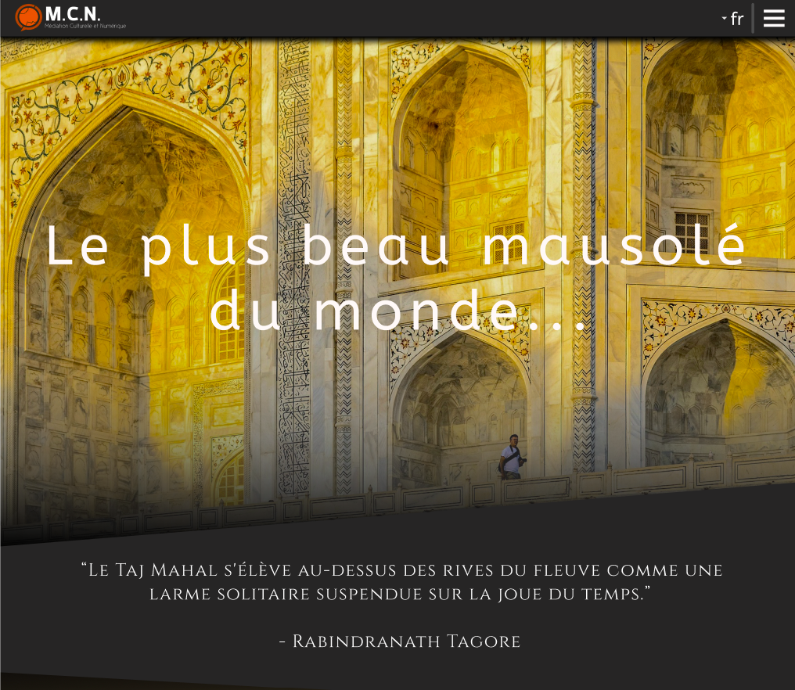
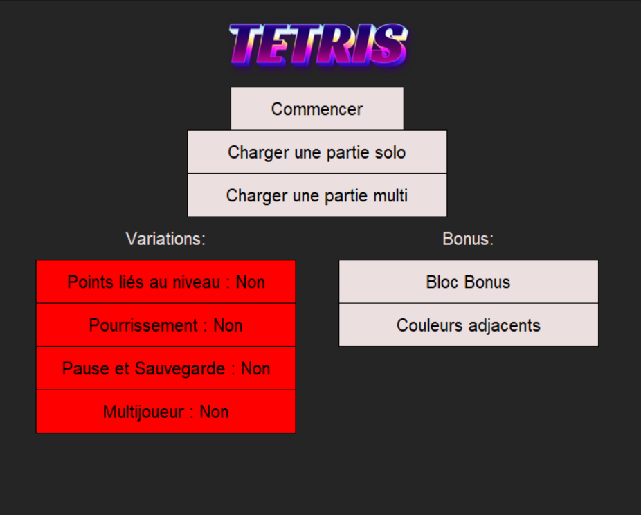
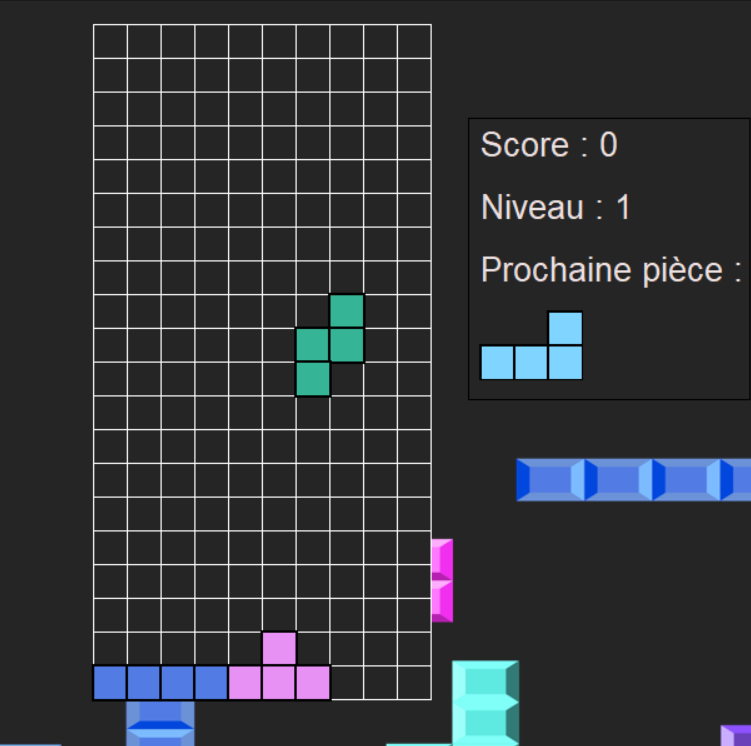

Bienvenue sur la page de présentation de mes projets
En début d'année, nous avons été chargé d'un projet pour créer un site web sur l'un des patrimoines mondiales reconnus par l'UNESCO. Mon groupe, composé de Adam NACHNOUCHI, Yanis PERES, Bakari SISSOKO, Loane MUSY, et moi-même, avons choisi le site du Taj Mahal en Inde.
Notre objectif est de créer un site dynamique donnant des informations culturelles sur le Taj Mahal, comme son histoire, sa signification culturelle, ou l'architecture, mais également des informations touristiques, comme la position géographique du site, les règles à suivre pendant la visite ou les routes empruntables par les touristes.
Le PHP nous est également utile pour rendre le site dynamique, ce qui permettra la facilitation des mises à jour des informations, ou le stockage des textes du site traduits dans d'autres langues.
 Voici un exemple du haut de la page d'accueil
Compétence(s): HTML, CSS, PHP, Maquettage, Recherches documentaires, Travail de groupe
Au premier semestre, nos professeurs de programmation en python nous ont donné le projet de recréer le classique Tetris sur Python, mais avec plusieurs contraintes :
Nous n'avions le droit qu'à un module fltk fourni comme module externe (qui normalement est un module pour le C++) sans avoir recours à la programmation orientée objet.
Avec mon binôme Loane, nous avons pu, en plus du jeu de base inclure des variantes et bonus comme un mode deux joueurs, relier les points au niveau, un mode pourrissement avec des blocs pouvant disparaître avec le temps, un système de sauvegarde, un mode avec des blocs bonus à différents effets s'ils sont effacés, et un mode d'élimination de blocs par détection de couleurs adjacentes.
 Voici l'écran d'accueil du jeu
 Voici un exemple d'une partie
Compétence(s): Python, Travail de groupe, Gestion de projet
Au second trimestre, nous avons été introduit à la programmation orientée objet avec Java. Avec ces lessons est rapidement venu un projet pour créer un jeu de yams, basé sur le lancé de dés et une sélection de combinaison, avec ce nouveau type de programmation appris.
Le stade actuel effectué avec mon binôme Thomas NOEL reste pour l'instant très simpliste. Il est prévu de rendre le jeu plus ergonomique et d'avoir un affichage sur une fenêtre avec une interface FXML. Si il nous reste du temps, nous pourrons peut être passer d'un simple jeu de jet de dés à un jeu de cartes.
Compétence(s): Java, JavaFX, Travail de groupe
Sur ce projet, je me suis mis en binôme avec Adam NACHNOUCHI. Notre but est de créer une base de données qui implémentera un site ayant un but précis. Nous avons choisi le sujet de la presse dans lequel nous devons créer un intranet pour la conception des magazines "SAVOIR VENDRE", le dernier titre de la société "POKA PRESSE". Cet intranet doit permettre une coopération optimale aux acteurs pour la création des numéros du magazine, en utilisant le PHP pour intégrer la base de données
Compétence(s): SQL, HTML, CSS, PHP, Travail de groupe
Ce projet fangame que j'ai rejoins en ligne, est un projet à but non-lucratif (dû aux droits d'auteurs de la compagnie Nintendo) visant à créer un jeu dans l'univers de la franchise Pokémon. J'ai rejoins le jeu en tant que développeur et game designer/scénariste. Je ne peux pas révéler grand chose du projet, à part qu'il me permettra de découvrir la création d'un jeu en équipe à but purement personnel, et non étudiant.
Compétence(s): Ecriture, Python, Travail de groupe
En 2023, en passant par une période dans laquelle j'étais friand de légendes urbaines et esthétiques visuelles oniriques sur Internet, l'inspiration m'est venue pour écrire un livre : un récit d'horreur psychologique.
Cependant, je ne veux pas que mon ouvrage en soit un comme un autre : j'ai décidé d'en faire un puzzle pour lequel il n'y a pas vraiment de solution définitive.
Pour cela, mon livre est découpé de 2 parties : les chapitres numérotées, dans laquelle l'histoire est racontée de façon linéaire, et les chapitres libres.
Les chapitres libres sont non numérotés et c'est au lecteur de les placer comme il le souhaite entre les chapitres numérotées, qui servent de bases pour le puzzle. Ils peuvent également être considérés comme optionnels et ainsi être ignorés du lecteur s'il le veut.
Suivant mes inspirations, le récit se veut volontairement immersif et, surtout, très contemplatif de l'environement du protagoniste.
J'ai également réfléchi à la version internationale du livre que j'appellerai "The Rain Is Real".
J'ai également prévu d'en faire une trilogie avec ses suites : "La Véritable Pluie vol.2 : Notre Réalité" et "L'Eternelle Pluie".
Compétence(s): Ecriture, Recherches internet approfondies.